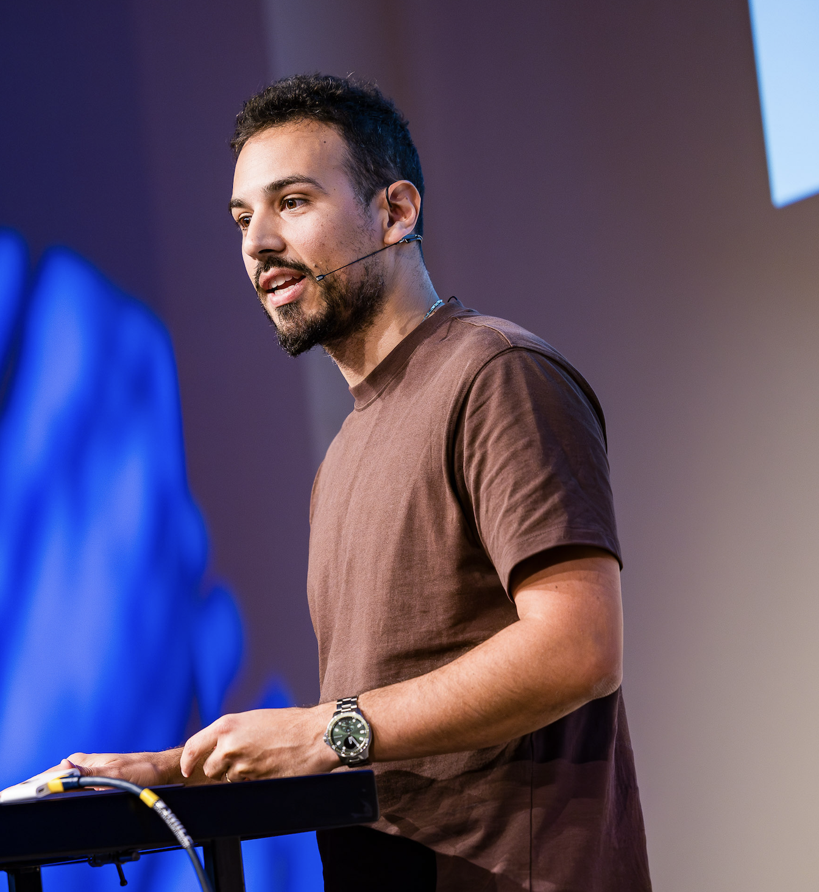

Build your Agent
Building local, offline AI assistants for real tasks
Valerio Ciotti · 22 September 2026
Today
Today’s Helpers
Valerio Ciotti

Team lead for the Consumer and Affluent Data Science Team.
Veeraraghavan Veerasubramanian
Senior Data Scientist for the Consumer and Affluent Data Science Team.
Today
Today's Menu
Everything today runs on your own laptop. No cloud, no API keys, nothing leaves your machine.
Today
The full 3 hours
Block A · What is an agent?
You've all used a chatbot. Today we build something that does things, not just answers.
Block A · What is an agent?
Chatbot vs. agent
Chatbot
You ask, it answers, the conversation ends. Nothing happens unless you type again.
Agent
It perceives something, decides what matters, and takes an action — often in a loop, often without you in every step.
Block A · What is an agent?
What actually is an agent?
Strip away the hype: an agent is software that perceives something, decides what it means, and acts — on its own, in a loop — instead of waiting for you to do each step by hand.
Perceives the room's temperature, decides it's too cold, acts by turning on the heat. No AI involved — the simplest possible agent.
Perceives a wall through a bump sensor, decides to turn, acts by changing direction. Still just a loop.
Perceives a new article, decides — using a language model's judgment — whether it matches your interest, acts by adding it to your book.
Block A · What is an agent?
Is this actually an agent problem?
The perceive → decide → act loop is worth the extra complexity only when "decide" needs real judgment. A quick gut check ↓
✓ Good fit for an agent
The output depends on judgment a script can't cheaply encode.
- Read a stack of PDFs and pull out the ones that actually match a research question
- Triage support tickets by what the person actually means, not a keyword match
- Draft a first-pass reply that references the right internal doc
- Turn a messy meeting transcript into real action items
✗ Not an agent problem
The rule already exists — writing it down is the whole job.
- Track a price on a page and alert if it drops below a number — a scheduled script + if/else
- Rename ten thousand files to a fixed pattern
- Poll an API every five minutes and log the response
- Check that a CSV's columns match a fixed schema
Block A · What is an agent?
Task, workflow, or agent?
Anthropic draws a sharper line than the industry usually does:
The system we built today is a workflow, not an agent.
That's about how our code uses the model — not a limit of Gemma itself. Our code hardcodes: discover → scrape → summarize → decide → publish, every run, same order. The model only fills in two judgment slots — "what's this about" and "does it match" — everything else, including writing the EPUB, is plain deterministic code. The same model could power a true agent, if the code let it choose its own next steps instead of following ours.
Block A · What is an agent?
The loop
Notice something — a new article, a price, an email.
Pull out what matters from the noise.
Judge it against a goal.
Do something real — send, write, save, notify.
Block A · Live
Talk to your model, right here ↓
If Ollama is running on this laptop, this talks to it directly — nothing leaves the room.
Output streams here once you hit Send.
Block A · The model
What you actually just talked to
gemma4:e2b — the smaller of two on-device sizes (e2b / e4b)2.3 billion parameters is enough that just writing them out as plain numbers, one per line, would fill roughly 40,000 novels. The 7 GB on disk is about the size of 2,000 photos on your phone. And the unused 128K context window is roughly a whole novel's worth of text in one go — this project only ever fills about 6% of it, one article at a time.
“Effective” parameters aren’t the whole file. Gemma 4’s small models use Per-Layer Embeddings — a lookup table bolted onto every layer, cheap to store, cheap to query, not part of the “active” compute spent per token. It’s what lets a file this size run this well on a laptop CPU.
And “thinking”? Gemma 4 also has an optional extended-reasoning mode — put a
<|think|> token in the prompt and it writes out a chain of thought before
answering.
# with the token (NOT used anywhere in this project) <|think|> → reasons out loud first, then answers — slower, more tokens # what every prompt in this repo actually sends "Return ONLY valid JSON: ..." → straight to the answer
No prompt in this project ever includes <|think|>.
Faster and more predictable on a CPU — the same “be unambiguous” habit from
earlier, this time applied to the model itself, not just its output.
Block A · What is an agent?
Today's build, on the same loop
Block B · Why local?
Three reasons
Privacy
Nothing you read or write leaves your laptop. No third party sees your interests, your sources, or your drafts.
Cost
Free after setup. No per-token bill, no quota, no surprise invoice for a batch job that ran long.
Offline
Works on a plane. Works when the venue wifi doesn't. The model is a file on disk, not a service you call.
Block B · Why local?
Small local models are weaker than the giant cloud ones.
That's not a footnote — it's useful. The constraint forces habits that sloppy prompting against a huge model lets you skip:
Hands-on
Now you're going to be the agent — literally.
Hands-on · You vs. Gemma
Judge five articles, then check Gemma's homework
Groups of five. Same prompt, same five articles — everyone judges by hand first, then runs it through Gemma and sees where they agree.
I want practical, evidence-backed articles about focus, attention, and deep work — things a busy person could actually try this week. Prefer real research or genuine lived experience behind the claims, concrete techniques over vague advice.
Reject generic productivity-app marketing and listicles, opinion pieces with no real evidence or experience behind them, and anything not actually about focus or attention.
- 1Alone, 15 min — read the prompt, then all five articles on the next slide. Mark each approve or reject, privately.
- 2Groups of five, 10 min — compare calls, argue the disagreements, agree on one verdict per article.
- 3Run the same prompt and articles through Gemma, 10 min.
- 4Whole room, 5 min — where did you agree with the model? Where didn't you?
Hands-on · You vs. Gemma
Five articles — scan and read
I want practical, evidence-backed articles about focus, attention, and deep work — things a busy person could actually try this week. Prefer real research or genuine lived experience behind the claims, concrete techniques over vague advice.
Reject generic productivity-app marketing and listicles, opinion pieces with no real evidence or experience behind them, and anything not actually about focus or attention.
A · Can't pay attention? You're not alone
B · On the Value of Hard Focus
C · Productivity Hacks That ACTUALLY Work for Me
D · Aristotle, Aelian and the giant octopus
E · Habit Formation and Willpower
Facilitator only — what Gemma actually said
A — approve. “The article presents empirical research on the impact of technology on attention spans.”
B — approve. “The article directly addresses developing sustained focus through a trainable process.” Borderline on evidence quality — did every group agree?
C — approve. “The article provides concrete, actionable systems for improving focus and productivity.” Borderline on authenticity — the summarizer never sees the affiliate links and course pitch a human reader would. Would you have approved it after reading the whole page?
D — reject. “The article discusses the history of citizen science rather than focus, attention, or deep work.” Clean, correct, no ambiguity.
E — reject. “The article focuses on general habit formation rather than specific, evidence-backed techniques for focus or deep work.” Borderline on topic fit — real research, well-argued, but is habit/willpower close enough to count? The one most likely to split the room.
Hands-on
What to click, and when
Same two files on your laptop, every time — no terminal, no typing.
run_app.commandrun_app.batContent Curator.appContent Curator.vbsHands-on · Your own run
Now break it on purpose
- 1Run your own build, start to finish — your prompt (the one you just tuned, or your own from scratch), your sources, for real.
- 2Then break it on purpose: loosen the prompt until junk gets through, or tighten it until nothing survives.
- 3Watch which articles flip, and why — that's the model's judgment changing, not a bug.
- 4Open the result — Calibre, an e-reader, or just your phone. See it in the format it was built for.
- 5Regroup and compare what each track built: what did your prompt keep that a neighbor's rejected?